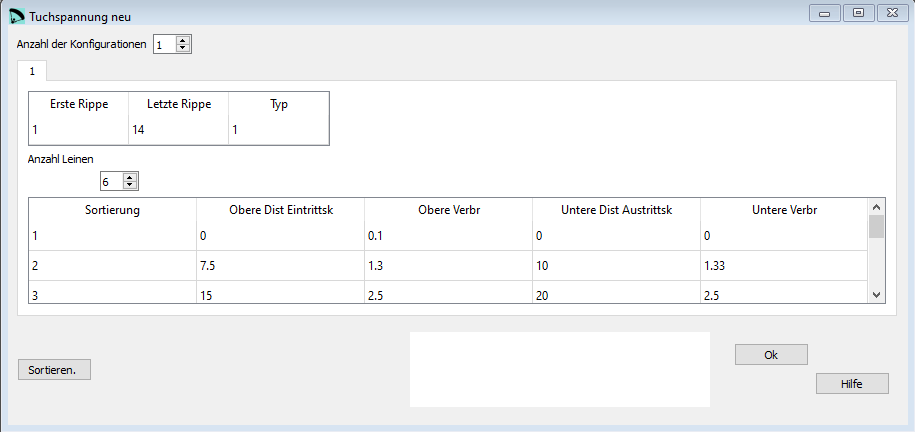

Tuchspannung - neu¶
Im Fenster Tuchspannung - neu editieren wir die Parameter aus dem 31. Abschnitt der lep Datei. Prinzipiell handelt es sich hier um dieselben Definitionen und Parameter wie im originalen Tuchspannungs-Abschnitt mit dem Unterschied dass mehr als 6 Korrekturpunkte definiert werden können.
{kind=link}
Rohdaten:
*******************************************************
* 31. NEW SKIN TENSION MODULE
*******************************************************
1
1
* Skin tension group number "1" from rib 1 to 14, 6 points, type "1"
1 1 14 6 1
1 0. 0.1 0. 0.
2 7.5 1.3 10. 1.33
3 15. 2.5 20. 2.5
4 80. 2.5 80. 2.5
5 90. 1.33 90. 1.33
6 100. 0.0 100. 0.1
Die Spannung von Ober- und Untersegel kann durch die Definition von zusätzlichen Verbreiterungen verändert werden. In der Basisversion können je 6 Punke definiert werden. Der Übergang zwischen den Punkten wird linear berechnet.

Anzahl der Konfigurationen¶
In einer Konfiguration können die Werte für eine bestimmte Gruppe von Rippen zusammengefasst werden. Für alle Rippen innerhalb der Konfiguration gelten dieselben Werte. Tuchspannung - neu ist ein optionaler Abschnitt. Wenn er nicht verwendet werden soll, dann einfach die Anzahl der Konfigurationen auf 0 setzen.
Erste Rippe¶
Die Nummer der ersten Rippe für die die Konfiguration gilt.
Letzte Rippe¶
Die Nummer der letzten Rippe für die die Konfiguration gilt.
Typ¶
Die Einzig mögliche Berechnungsart ist aktuell lineare Interpolation. Hier also immer 1 einsetzen.
Obere Dist Eintrittskante¶
Distanz von der Eintrittskante in [% Flügeltiefe]
Obere Verbr¶
Grösse der Verbreiterung in [% Flügeltiefe]
Untere Dist Austrittskante¶
Distanz von der Austrittskante in [% Flügeltiefe]
Untere Verbr¶
Grösse der Verbreiterung in [% Flügeltiefe]
Spann mini ribs¶
Tuchspannung - neu verwendet denselben Konfigurationswert für Spann mini ribs wie die originale Definition. Damit die Berechnung korrekt funktioniert muss deshalb im Fenster Tuchspannung der Werte eingegeben werden.
Hier geht es darum die Dehnung des Tuches zu korrigieren.

Im Zweifelsfall setze hier den Standardwert von 0.0114
Anzahl Punkte und Koeff¶
Tuchspannung - neu verwendet dieselben Konfigurationswerte für Anzahl Punkte und Koeff wie die originale Definition. Damit die Berechnung korrekt funktioniert müssen deshalb im Fenster Tuchspannung die Werte eingestellt werden.
Prinzipiell gibt es zwei verschiedene Interpretationen der beiden Werte. Beschrieben wird hier nur der empfohlene Anwendungsfall.
Setze die Parameter auf die Werte:
1000 1.0
Die erste Zahl “1000” sagt dem Programm die maximal mögliche Präzision bei der Längenberechnung von Rippen und Panels zu benutzen. Typischerweise werden Werte besser 0.1 mm erreicht.
Der zweite Wert beeinflusst noch einmal die Berechnung. Der Wert kann zwischen 0.0 und 1.0 verändert werden.
“0.0” es werden keine Korrekturen berechnet, der erste Wert wird ausgehebelt.
“1.0” es wird mit maximaler Genauigkeit gerechnet.
Sortieren¶
Mit der Schaltfläche Sortieren können die Zeilen neu angeordnet werden. Wenn das gemacht werden soll kannst Du die neuen Nummern in der ersten Spalte einsetzten und anschliessend mit der Schaltfläche die Tabelle neu sortieren.
Eine detaillierte Beschreibung in englisch findest Du auf der Laboratori d'envol website.